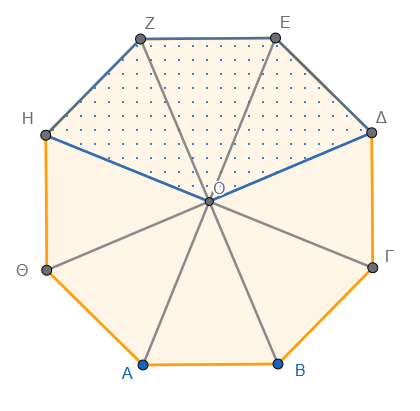
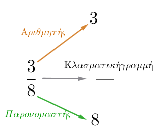

1 Η Έννοια του Κλάσματος
1.1 Θεωρία
Ορισμός: Το κλάσμα αναπαριστά ένα κομμάτι ενός ολόκληρου αντικειμένου ή έναν αριθμό ίσων κομματιών του όλου.

Το οκτάγωνο είναι χωρισμένο σε 8 ίσα τρίγωνα, τα 3 στιγματισμένα μέρη είναι τα \(\dfrac{3}{8}\) όλου του πολυγώνουΌροι του κλάσματος: Αποτελείται από τον αριθμητή \(3\) (πάνω), τον παρονομαστή \(8\) (κάτω) και την κλασματική γραμμή.

Ο παρονομαστής δείχνει σε πόσα ίσα μέρη χωρίσαμε τη μονάδα.
Ο αριθμητής δείχνει πόσα από αυτά τα μέρη πήραμε.
Η κλασματική γραμμή συμβολίζει την πράξη της διαίρεσης.
Περιορισμός: Ο παρονομαστής δεν μπορεί ποτέ να είναι μηδέν (0).
Κλασματική μονάδα: Είναι το κλάσμα που έχει αριθμητή τη μονάδα (1), π.χ. \(\dfrac{1}{ν}\).
Λυμένες Ασκήσεις
- Ερώτηση: Ποιος είναι ο αριθμητής και ποιος ο παρονομαστής στο κλάσμα \(\dfrac{4}{6}\);
Λύση: Αριθμητής είναι το 4 και παρονομαστής το 6.
- Ερώτηση: Γράψτε τη διαίρεση \(3:8\) ως κλάσμα.
Λύση: Το πηλίκο της διαίρεσης \(3:8\) εκφράζεται ως το κλάσμα \(\dfrac{3}{8}\).
- Ερώτηση: Αν χωρίσουμε μια πίτσα σε 5 ίσα μέρη και φάμε το 1, τι μέρος της πίτσας φάγαμε;
Λύση: Ο παρονομαστής είναι 5 (συνολικά μέρη) και ο αριθμητής 1 (μέρος που πήραμε), άρα φάγαμε το \(\dfrac{1}{5}\) της πίτσας.
- Ερώτηση: Ποιος φυσικός αριθμός είναι ίσος με το κλάσμα \(\dfrac{24}{6}\);
Λύση: \(24 : 6 = 4\). Άρα το κλάσμα ισούται με τον φυσικό αριθμό 4.
- Ερώτηση: Υπολογίστε το \(\dfrac{1}{5}\) του 20.
Λύση: Πολλαπλασιάζουμε το \(\dfrac{1}{5}\) με το 20: \(\dfrac{1 \cdot 20}{5} = \dfrac{20}{5} = 4\).
Άλυτες Ασκήσεις
Γράψτε ως κλάσματα τις διαιρέσεις: \(9:10\), \(45:68\), \(132:234\).
Ποια διαίρεση παριστάνει το κλάσμα \(\dfrac{5}{23}\) και ποια το \(\dfrac{18}{8}\);
Μια οικογένεια έχει 6 μέλη (2 γονείς, 4 παιδιά). Τι κλάσμα του συνόλου είναι τα παιδιά;
Στην ίδια οικογένεια, τι κλάσμα του συνόλου είναι οι ενήλικες;
Βρείτε με ποιον φυσικό αριθμό είναι ίσα τα κλάσματα: \(\dfrac{12}{2}, \dfrac{30}{5}, \dfrac{8}{2}\).
Στο κλάσμα \(\dfrac{x}{x-3}\), ποιον περιορισμό πρέπει να βάλουμε για τον παρονομαστή;
Αν ο αριθμητής ενός κλάσματος είναι 0, με τι ισούται το κλάσμα;
Γράψτε τον φυσικό αριθμό 13 ως κλάσμα με παρονομαστή τη μονάδα.
Σχεδιάστε ένα ορθογώνιο, χωρίστε το σε 8 ίσα μέρη και σκιάστε τα \(\dfrac{3}{8}\).
Τι ονομάζουμε όρους ενός κλάσματος;
1.2 2. Ισοδύναμα Κλάσματα
Θεωρία
Ορισμός: Ισοδύναμα ή ίσα ονομάζονται τα κλάσματα που εκφράζουν το ίδιο μέρος ενός μεγέθους, παρόλο που έχουν διαφορετικούς όρους.
Τρόποι δημιουργίας:
- Πολλαπλασιάζοντας αριθμητή και παρονομαστή με τον ίδιο φυσικό αριθμό (διάφορο του μηδενός).
\[\frac{a}{\beta}=\frac{a\cdot\kappa}{\beta\cdot\kappa} \]
- Διαιρώντας αριθμητή και παρονομαστή με τον ίδιο φυσικό αριθμό (απλοποίηση).
\[\frac{a}{\beta}=\frac{a:\kappa}{\beta:\kappa}\]
Ανάγωγο κλάσμα: Το κλάσμα που δεν μπορεί να απλοποιηθεί άλλο (ο αριθμητής και ο παρονομαστής δεν έχουν κοινό διαιρέτη εκτός από το 1).
Ιδιότητα: Σε δύο ισοδύναμα κλάσματα \(\dfrac{a}{\beta} = \dfrac{\gamma}{\delta}\), τα χιαστί γινόμενα είναι ίσα (\(a \cdot \delta = \beta \cdot \gamma\)).
Λυμένες Ασκήσεις
- Ερώτηση: Βρείτε ένα ισοδύναμο κλάσμα του \(\dfrac{1}{2}\) με παρονομαστή το 4.
Λύση: Πολλαπλασιάζουμε και τους δύο όρους με το 2: \(\dfrac{1 \cdot 2}{2 \cdot 2} = \dfrac{2}{4}\).
- Ερώτηση: Απλοποιήστε το κλάσμα \(\dfrac{6}{15}\).
Λύση: Διαιρούμε και τους δύο όρους με τον ΜΚΔ τους, που είναι το 3: \(\dfrac{6:3}{15:3} = \dfrac{2}{5}\).
- Ερώτηση: Είναι τα κλάσματα \(\dfrac{1}{2}\) και \(\dfrac{4}{8}\) ισοδύναμα;
Λύση: Ελέγχουμε τα χιαστί γινόμενα: \(1 \cdot 8 = 8\) και \(2 \cdot 4 = 8\). Επειδή \(8=8\), είναι ισοδύναμα.
- Ερώτηση: Τρέψτε το \(\dfrac{3}{4}\) σε ισοδύναμο με αριθμητή 21.
Λύση: Επειδή \(3 \cdot 7 = 21\), πολλαπλασιάζουμε και τον παρονομαστή με το 7: \(4 \cdot 7 = 28\). Άρα \(\dfrac{21}{28}\).
- Ερώτηση: Το κλάσμα \(\dfrac{2}{5}\) είναι ανάγωγο;
Λύση: Ναι, γιατί το 2 και το 5 δεν έχουν κοινό διαιρέτη εκτός από τη μονάδα.
Άλυτες Ασκήσεις
Μετατρέψτε το κλάσμα \(\dfrac{1}{6}\) σε ισοδύναμο με παρονομαστή 12, 30 και 60.
Απλοποιήστε τα κλάσματα: \(\dfrac{24}{48}, \dfrac{36}{45}, \dfrac{66}{77}\).
Εξετάστε αν είναι ισοδύναμα τα ζεύγη: \(\dfrac{4}{5}\) και \(\dfrac{20}{25}\), \(\dfrac{32}{64}\) και \(\dfrac{1}{2}\).
Βρείτε τον άγνωστο \(x\) στην ισότητα: \(\dfrac{5}{6} = \dfrac{x}{42}\).
Κάντε ομώνυμα τα κλάσματα \(\dfrac{5}{6}\) και \(\dfrac{4}{15}\).
Μετατρέψτε το \(\dfrac{2}{3}\) σε ισοδύναμο με παρονομαστή 120.
Απλοποιήστε το κλάσμα \(\dfrac{114}{76}\) μέχρι να γίνει ανάγωγο.
Βρείτε τρία ισοδύναμα κλάσματα για το \(\dfrac{1}{3}\).
Πώς ονομάζεται η διαδικασία με την οποία μικραίνουμε τους όρους ενός κλάσματος;
Συμπληρώστε την ισότητα: \(\dfrac{3}{8} = \dfrac{a= }{24}\).
1.3 Σύγκριση Κλασμάτων
Θεωρία
Ομώνυμα κλάσματα: Έχουν ίδιο παρονομαστή. Μεγαλύτερο είναι αυτό με τον μεγαλύτερο αριθμητή.
Κλάσματα με ίδιο αριθμητή: Μεγαλύτερο είναι αυτό με τον μικρότερο παρονομαστή.
Ετερώνυμα κλάσματα: Για να τα συγκρίνουμε, τα μετατρέπουμε πρώτα σε ομώνυμα.
Σύγκριση με τη μονάδα (1):
Αριθμητής \(\lt\) Παρονομαστή \(\Rightarrow\) Κλάσμα \(\lt 1\) (Γνήσιο).
Αριθμητής \(\gt\) Παρονομαστή \(\Rightarrow\) Κλάσμα \(\gt 1\) (Καταχρηστικό).
Αριθμητής = Παρονομαστή \(\Rightarrow\) Κλάσμα = 1.
Λυμένες Ασκήσεις
- Ερώτηση: Συγκρίνετε τα κλάσματα \(\dfrac{2}{5}\) και \(\dfrac{4}{5}\).
Λύση: Είναι ομώνυμα. Επειδή \(4 > 2\), ισχύει \(\dfrac{4}{5} > \dfrac{2}{5}\).
- Ερώτηση: Συγκρίνετε τα \(\dfrac{3}{7}\) και \(\dfrac{3}{5}\).
Λύση: Έχουν ίδιο αριθμητή. Μεγαλύτερο είναι αυτό με τον μικρότερο παρονομαστή, άρα \(\dfrac{3}{5} > \dfrac{3}{7}\).
- Ερώτηση: Συγκρίνετε το \(\dfrac{5}{6}\) με το \(\dfrac{13}{15}\).
Λύση: Τα κάνουμε ομώνυμα με ΕΚΠ(6,15)=30. \(\dfrac{5}{6} = \dfrac{25}{30}\) και \(\dfrac{13}{15} = \dfrac{26}{30}\). Επειδή \(\dfrac{25}{30} < \dfrac{26}{30}\), τότε \(\dfrac{5}{6} < \dfrac{13}{15}\).
- Ερώτηση: Το κλάσμα \(\dfrac{3}{4}\) είναι μεγαλύτερο ή μικρότερο από το 1;
Λύση: Επειδή ο αριθμητής (3) είναι μικρότερος από τον παρονομαστή (4), το κλάσμα είναι μικρότερο από το 1 (\(\dfrac{3}{4} < 1\)).
- Ερώτηση: Συγκρίνετε το \(\dfrac{8}{7}\) με τη μονάδα.
Λύση: \(8 > 7\), άρα \(\dfrac{8}{7} > 1\).
Άλυτες Ασκήσεις
Βάλτε σε αύξουσα σειρά τα κλάσματα: \(\dfrac{4}{9}, \dfrac{4}{7}, \dfrac{4}{11}, \dfrac{4}{5}, \dfrac{4}{3}\).
Συγκρίνετε τα κλάσματα: \(\dfrac{6}{31}\) και \(\dfrac{6}{7}\), \(\dfrac{8}{7}\) και \(\dfrac{4}{7}\).
Ποιο είναι μεγαλύτερο: το \(\dfrac{7}{8}\) ή το \(\dfrac{4}{9}\); (Κάντε τα ομώνυμα).
Συγκρίνετε με το 1 τα κλάσματα: \(\dfrac{9}{9}, \dfrac{116}{253}, \dfrac{85}{48}\).
Βρείτε ένα κλάσμα ανάμεσα στο \(\dfrac{1}{9}\) και το \(\dfrac{2}{9}\).
Αν ο Νίκος έφαγε τα \(\dfrac{4}{6}\) μιας πίτσας και ο Πέτρος τα \(\dfrac{5}{6}\), ποιος έφαγε περισσότερο;
Ταξινομήστε από το μικρότερο στο μεγαλύτερο: \(\dfrac{7}{5}, \dfrac{2}{5}, \dfrac{1}{5}, \dfrac{9}{5}\).
Είναι το \(\dfrac{17}{36}\) μεγαλύτερο ή μικρότερο από το \(\dfrac{3}{4}\);
Πώς ονομάζεται το κλάσμα του οποίου ο αριθμητής είναι μεγαλύτερος από τον παρονομαστή;
Συγκρίνετε τα κλάσματα \(\dfrac{2013}{2014}\) και \(\dfrac{2015}{2014}\).
1.4 Πρόσθεση και Αφαίρεση Κλασμάτων
Θεωρία
- Ομώνυμα κλάσματα: Προσθέτουμε ή αφαιρούμε τους αριθμητές και διατηρούμε τον ίδιο παρονομαστή.
\[\frac{a}{\gamma}\pm\frac{\beta}{\gamma}=\frac{a\pm\beta}{\gamma}\]
- Ετερώνυμα κλάσματα: Τα μετατρέπουμε πρώτα σε ομώνυμα (συνήθως με το ΕΚΠ των παρονομαστών) και μετά εκτελούμε την πράξη στους αριθμητές.
Λυμένες Ασκήσεις
- Κάντε την πρόσθεση \(\dfrac{2}{5} + \dfrac{1}{5}\).
Λύση: \(\dfrac{(2+1)}{5} = \dfrac{3}{5}\).
- Κάντε την αφαίρεση \(\dfrac{3}{5} - \dfrac{1}{5}\).
Λύση: \(\dfrac{(3-1)}{5} = \dfrac{2}{5}\).
- Κάντε την πρόσθεση \(\dfrac{3}{10} + \dfrac{5}{8}\).
Λύση: ΕΚΠ(10,8)=40. \(\dfrac{12}{40} + \dfrac{25}{40} = \dfrac{37}{40}\).
- Κάντε την αφαίρεση \(\dfrac{5}{8} - \dfrac{3}{10}\).
Λύση: \(\dfrac{25}{40} - \dfrac{12}{40} = \dfrac{13}{40}\).
- Κάντε την πρόσθεση \(\dfrac{3}{8} + \dfrac{5}{12}\).
Λύση: ΕΚΠ(8,12)=24. \(\frac{(3 \cdot 3)}{24} + \frac{(5 \cdot 2)}{24} = \frac{9}{24} + \frac{10}{24} = \frac{19}{24}\).
Άλυτες Ασκήσεις
Κάντε τις προσθέσεις: \(\dfrac{3}{8} + \dfrac{7}{12} + \dfrac{3}{4}\).
Κάντε τις αφαιρέσεις: \(\dfrac{5}{7} - \dfrac{3}{9}\) και \(\dfrac{6}{8} - \dfrac{3}{12}\).
Υπολογίστε το άθροισμα: \(\dfrac{1}{2} + \dfrac{5}{6} + \dfrac{2}{3}\).
Βρείτε τη διαφορά: \(\dfrac{3}{2} - \dfrac{4}{3}\).
Η Ιωάννα χρησιμοποίησε \(\dfrac{3}{10}\) κιλού ζάχαρη για ένα γλυκό και \(\dfrac{2}{5}\) για ενα άλλο. Πόση ζάχαρη χρησιμοποίησε συνολικά;
Αν είχε 1 κιλό ζάχαρη, πόση της έμεινε μετά παρασκευή των γλυκών (ασκηση 5);
Ένα συνεργείο κάνει ένα έργο σε 8 ημέρες και ένα άλλο σε 6. Τι μέρος του έργου κάνουν μαζί σε 1 ημέρα; (\(\dfrac{1}{8} + \dfrac{1}{6}\))
Υπολογίστε: \((\dfrac{5}{6} + \dfrac{1}{2}) - \dfrac{3}{4}\).
Σε ποιον αριθμό πρέπει να προσθέσουμε το \(\dfrac{2}{5}\) για να βρούμε \(\dfrac{4}{7}\);
Υπολογίστε: \(\dfrac{12}{5} - \dfrac{4}{3} - \left(5 - \dfrac{2}{3}\right)\) .
Υπολογίστε την παράσταση (2 Παρενθέσεις) \[\left(5 - \frac{2}{3}\right) + \left(1 + \frac{1}{2}\right)\]
Υπολογίστε την παράσταση (3 Παρενθέσεις) \[\left(2 + \frac{1}{4}\right) - \left[\left(\frac{1}{2} + \frac{1}{3}\right) + \left(1 - \frac{3}{4}\right)\right]\]
Βήμα 1: Επίλυση της εσωτερικής παρένθεσης \((\dfrac{1}{2} + \dfrac{1}{3})\) Κοινός παρονομαστής το 6: \(\dfrac{3}{6} + \dfrac{2}{6} = \dfrac{5}{6}\).
Βήμα 2: Επίλυση της εσωτερικής παρένθεσης \((1 - \dfrac{3}{4})\) Μετατροπή: \(\dfrac{4}{4} - \dfrac{3}{4} = \dfrac{1}{4}\).
Βήμα 3: Επίλυση της αγκύλης και της εξωτερικής παρένθεσης Αγκύλη: \(\dfrac{5}{6} + \dfrac{1}{4} = \dfrac{10}{12} + \dfrac{3}{12} = \dfrac{13}{12}\). Εξωτερική παρένθεση: \(2 + \dfrac{1}{4} = \dfrac{8}{4} + \dfrac{1}{4} = \dfrac{9}{4}\).
Βήμα 4: Τελική αφαίρεση \(\dfrac{9}{4} - \dfrac{13}{12} = \dfrac{27}{12} - \dfrac{13}{12} = \dfrac{14}{12} = \dfrac{7}{6}\).
Τελική Απάντηση \(\dfrac{7}{6}\) ή \(1 \dfrac{1}{6}\)
- Υπολογίστε την παράσταση (4 Παρενθέσεις & Εσωτερικές) \[\left[\left(3 - \frac{1}{2}\right) + \left(\frac{1}{5} + \frac{2}{5}\right)\right] - \left[\left(1 + \frac{1}{10}\right) - \left(\frac{1}{2} - \frac{1}{4}\right)\right]\]
Βήμα 1: Επίλυση παρενθέσεων πρώτης αγκύλης
……………………………………………….
Άθροισμα: \(\dfrac{5}{2} + \dfrac{3}{5} = \dfrac{25}{10} + \dfrac{6}{10} = \dfrac{31}{10}\).
Βήμα 2: Επίλυση παρενθέσεων δεύτερης αγκύλης
…………………………………………………………..
Αφαίρεση: \(\dfrac{11}{10} - \dfrac{1}{4} = \dfrac{22}{20} - \dfrac{5}{20} = \dfrac{17}{20}\).
Βήμα 3: Τελική αφαίρεση
…………………………………………………………
Τελική Απάντηση \(\dfrac{9}{4}\) ή \(2 \dfrac{1}{4}\)
- Υπολογίστε την παράσταση (Σύνθετη με πολλαπλές εσωτερικές) \[4 - \left\{ \left[ \left( \frac{1}{2} + \frac{1}{2} \right) + \left(2 - \frac{2}{3} \right) \right] - \left(1 + \frac{1}{6} \right) \right\}\]
Βήμα 1: Εσωτερικές παρενθέσεις της αγκύλης
…………………………………………..
Άθροισμα αγκύλης: \(1 + \dfrac{4}{3} = \dfrac{7}{3}\).
Βήμα 2: Η τρίτη παρένθεση \((1 + \dfrac{1}{6}) = \dfrac{7}{6}\).
Βήμα 3: Επίλυση της μεγάλης παρένθεσης (άγκιστρο) \(\dfrac{7}{3} - \dfrac{7}{6} = \dfrac{14}{6} - \dfrac{7}{6} = \dfrac{7}{6}\).
Βήμα 4: Τελική αφαίρεση από τον φυσικό 4 \(4 - \dfrac{7}{6} = \dfrac{24}{6} - \dfrac{7}{6} = \dfrac{17}{6}\).
Τελική Απάντηση \(\dfrac{17}{6}\) ή \(2 \dfrac{5}{6}\)
1.5 Πολλαπλασιασμός Κλασμάτων
Θεωρία
- Κανόνας: Πολλαπλασιάζουμε αριθμητή με αριθμητή και παρονομαστή με παρονομαστή.
\[\frac{a}{\beta} \cdot \frac{\gamma}{\delta}=\frac{a\cdot\gamma}{\beta\cdot\delta}\]
Σημαντικό: Δεν χρειάζεται τα κλάσματα να είναι ομώνυμα.
Με ακέραιο: Πολλαπλασιάζουμε τον ακέραιο μόνο με τον αριθμητή και αφήνουμε τον ίδιο παρονομαστή. \[ a \cdot \frac{\gamma}{\delta}=\frac{a\cdot\gamma}{\delta}\]
Μέρος αριθμού: Για να βρούμε το κλασματικό μέρος ενός αριθμού, πολλαπλασιάζουμε το κλάσμα με τον αριθμό.
\[\frac{\kappa}{λ} \cdot A =\frac{\kappa\cdot A}{λ}\]
Λυμένες Ασκήσεις (5)
- Πολλαπλασιάστε \(\dfrac{2}{7} \cdot \dfrac{4}{5}\).
Λύση: \(\dfrac{(2 \cdot 4)}{(7 \cdot 5)} = \dfrac{8}{35}\).
- Πολλαπλασιάστε \(2 \cdot \dfrac{3}{5}\).
Λύση: \(\dfrac{(2 \cdot 3)}{5} = \dfrac{6}{5}\).
- Βρείτε τα \(\dfrac{3}{4}\) του 100.
Λύση: \(\dfrac{3}{4} \cdot 100 = \dfrac{(3 \cdot 100)}{4} = \dfrac{300}{4} = 75\).
- Βρείτε το \(\dfrac{1}{5}\) του 4.
Λύση: \(\dfrac{1}{5} \cdot 4 = \dfrac{4}{5}\).
- Βρείτε τα \(\dfrac{2}{3}\) του 200.
Λύση: \(\dfrac{2}{3} \cdot 200 = \dfrac{400}{3}\).
Άλυτες Ασκήσεις
Υπολογίστε το γινόμενο: \((\dfrac{5}{6} + \dfrac{1}{2} - \dfrac{3}{4}) \cdot 4\).
Βρείτε τα \(\dfrac{5}{9}\) του 252.
Βρείτε τα \(\dfrac{3}{4}\) του 372.
Ένας βοσκός έχει 385 ζώα.
Τα \(\dfrac{2}{5}\) είναι γίδια.
Πόσα είναι τα γίδια;
Ένας οινοπώλης πούλησε τα \(\dfrac{5}{8}\) από τα 184 κιλά κρασί. Πόσα κιλά πούλησε;
Βρείτε τα \(\dfrac{4}{5}\) των \(\dfrac{2}{3}\) των 60 €.
Πολλαπλασιάστε \(\dfrac{3}{8} \cdot 12\).
Βρείτε το \(\dfrac{1}{4}\) της αξίας ενός υπολογιστή που κοστίζει 1.500 €.
Πόσο είναι τα \(\dfrac{9}{7}\) του 60;
Αν το ένα κιλό πατάτες κοστίζει 2 €, πόσο κοστίζουν τα \(4\) κιλά, πόσο τα \(\dfrac{5}{8}\) κιλά;
Να υπολογιστεί η παράσταση (2 Παρενθέσεις) \[\left(\frac{3}{4} + \frac{1}{2}\right) \times \left(5 - \frac{1}{3}\right)\]
……………………………….
……………………………….
Τελική Απάντηση \(\dfrac{35}{6}\) ή \(5 \dfrac{5}{6}\)
- Να υπολογίσετε τη παράσταση (3 Παρενθέσεις) \[3 \times \left[\left(\frac{1}{2} + 1\right) - \left(\frac{1}{4} \times \frac{2}{3}\right)\right]\]
Βήμα 1: Εσωτερική παρένθεση πρόσθεσης
………………………………………..
………………………………………
Βήμα 2: Εσωτερική παρένθεση πολλαπλασιασμού
………………………………………..
……………………………………….
Βήμα 3: Αφαίρεση εντός της αγκύλης
………………………………….
…………………………………
Βήμα 4: Τελικός πολλαπλασιασμός με τον φυσικό 3 \(3 \times \dfrac{4}{3} = \dfrac{12}{3} = 4\).
Τελική Απάντηση \(4\)
- Υπολογίστε την παράσταση (4 Παρενθέσεις & Εσωτερικές) \[\left[ \left(2 \times \frac{1}{5}\right) + \left(\frac{3}{10} - \frac{1}{5}\right)\right ] \times \left[ \left(1 + \frac{1}{2}\right) \times 2 \right]\]
Βήμα 1: Πρώτη αγκύλη (εσωτερικές πράξεις)
……………………………………………
Άθροισμα: \(\dfrac{2}{5} + \dfrac{1}{10} = \dfrac{4}{10} + \dfrac{1}{10} = \dfrac{5}{10} = \dfrac{1}{2}\).
Βήμα 2: Δεύτερη αγκύλη (εσωτερικές πράξεις)
………………………………………..
Πολλαπλασιασμός: \(\dfrac{3}{2} \times 2 = 3\).
Βήμα 3: Τελικός πολλαπλασιασμός \(\dfrac{1}{2} \times 3 = \dfrac{3}{2}\).
Τελική Απάντηση \(\dfrac{3}{2}\) ή \(1 \dfrac{1}{2}\)
- Υπολογίστε την παράσταση (Σύνθετη με αλληλουχία πράξεων) \[\left\{ \left[ \left( 4 - \frac{1}{2} \right) \times \frac{2}{7} \right] + \left( \frac{1}{3} \times 2 \right) \right\} \times \frac{1}{2}\]
Βήμα 1: Εσωτερική παρένθεση αφαίρεσης \((4 - \dfrac{1}{2}) = \dfrac{8}{2} - \dfrac{1}{2} = \dfrac{7}{2}\).
Βήμα 2: Πολλαπλασιασμός εντός αγκύλης \(\dfrac{7}{2} \times \dfrac{2}{7} = \dfrac{14}{14} = 1\).
Βήμα 3: Δεύτερη παρένθεση και άθροισμα αγκίστρου \(\left(\dfrac{1}{3} \times 2\right) = \dfrac{2}{3}\). Στο άγκιστρο: \(1 + \dfrac{2}{3} = \dfrac{3}{3} + \dfrac{2}{3} = \dfrac{5}{3}\).
Βήμα 4: Τελικός πολλαπλασιασμός
……………………………………
Τελική Απάντηση \(\dfrac{5}{6}\)
- Υπολογίστε την παράσταση (Πολλαπλές εσωτερικές και φυσικοί) \[2 \times \left\{ \left[ \left( \frac{3}{4} + \frac{1}{4} \right) \times 5 \right] - \left[ 2 \times \left( 1 - \frac{1}{3} \right) \right] \right\}\]
Βήμα 1: Επίλυση αριστερής αγκύλης \(\left(\dfrac{3}{4} + \dfrac{1}{4}\right) = \dfrac{4}{4} = 1\). \(1 \times 5 = 5\).
Βήμα 2: Επίλυση δεξιάς αγκύλης \(\left(1 - \frac{1}{3}\right) = \frac{2}{3}\). \(2 \times \dfrac{2}{3} = \dfrac{4}{3}\).
Βήμα 3: Αφαίρεση εντός αγκίστρου \(............................... = \dfrac{11}{3}\).
Βήμα 4: Τελικός πολλαπλασιασμός \(2 \times \dfrac{11}{3} = \dfrac{22}{3}\).
Τελική Απάντηση \(\dfrac{22}{3}\) ή \(7 \dfrac{1}{3}\)
1.6 Διαίρεση Κλασμάτων
Θεωρία
- Αντίστροφοι αριθμοί: Δύο αριθμοί των οποίων το γινόμενο είναι 1.
Για ένα κλάσμα, ο αντίστροφός του προκύπτει αν αλλάξουμε τις θέσεις αριθμητή και παρονομαστή. Το 0 δεν έχει αντίστροφο.
Ο αντίστροφος του \(\dfrac{a}{\beta}\) είναι το \(\dfrac {\beta}{a}\) διότι \(\dfrac{a}{\beta} \cdot \dfrac{\beta}{a}=1\)
Ο αντίστροφος του \(α\) είναι ο \(\dfrac{1}{a}\) διότι \(a\cdot\dfrac{1}{a}=1\)
- Κανόνας διαίρεσης: Πολλαπλασιάζουμε το πρώτο κλάσμα (διαιρετέο) με τον αντίστροφο του δεύτερου κλάσματος (διαιρέτη).
\[\frac{a}{\beta} : \frac{\gamma}{\delta}=\frac{a}{\beta}\cdot\frac{\delta}{\gamma}\]
- Σύνθετο κλάσμα: Κλάσμα που έχει έναν τουλάχιστον όρο κλάσμα. Λύνεται πολλαπλασιάζοντας τους “άκρους” όρους για αριθμητή και τους “μέσους” για παρονομαστή.
\[\frac{\dfrac{a}{\beta}}{\dfrac{\gamma}{\delta}} \cdot =\frac{a\cdot\delta}{\beta\cdot\gamma}\]
Λυμένες Ασκήσεις (5)
- Διαιρέστε \(\dfrac{2}{5} : \dfrac{3}{8}\).
Λύση: \(\dfrac{2}{5} \cdot \dfrac{8}{3} = \dfrac{(2 \cdot 8)}{ (5 \cdot 3)} = \dfrac{16}{15}\).
- Βρείτε τον αντίστροφο του \(\dfrac{2}{3}\).
Λύση: Είναι το \(\dfrac{3}{2}\), γιατί \(\dfrac{2}{3} \cdot \dfrac{3}{2} = \dfrac{6}{6} = 1\).
- Διαιρέστε \(\dfrac{4}{7} : \dfrac{3}{8}\).
Λύση: \(\dfrac{4}{7} \cdot \dfrac{8}{3} = \dfrac{32}{21}\).
- Λύστε το σύνθετο κλάσμα \(\dfrac{\dfrac{7}{3}}{\dfrac{5}{4}}\).
Λύση: Άκροι (7, 4) \(\rightarrow 7 \cdot 4 = 28\). Μέσοι (3, 5) \(\rightarrow 3 \cdot 5 = 15\). Αποτέλεσμα \(\dfrac{28}{15}\).
- Αν τα \(\dfrac{2}{5}\) ενός αριθμού είναι το 100, ποιος είναι ο αριθμός;
Λύση: Κάνουμε διαίρεση \(100 : \dfrac{2}{5} = 100 \cdot \dfrac{5}{2} = \dfrac{500}{2} = 250\).
Άλυτες Ασκήσεις
Βρείτε τους αντίστροφους των: \(\dfrac{12}{13}, 5, \dfrac{1}{9}\).
Κάντε τη διαίρεση: \(\dfrac{1}{3} : \dfrac{2}{5}\).
Διαιρέστε έναν φυσικό αριθμό με κλάσμα: \(3 : \dfrac{1}{14}\).
Λύστε την εξίσωση \(6x = 1\) βελτιώνοντας τη γνώση σας για τους αντίστροφους.
Μετατρέψτε το σύνθετο κλάσμα σε απλό: \(\dfrac{\dfrac{3}{2}} {\dfrac{5}{8}}\).
Ένας παππούς έχει 32 κιλά κρασί και μπουκάλια των \(\dfrac{2}{5}\) του κιλού. Πόσα μπουκάλια θα γεμίσει;
(\(32 : \dfrac{2}{5}\))
- Αν τα \(\dfrac{3}{4}\) των μαθητών είναι 270, πόσους μαθητές έχει το σχολείο συνολικά;
(\(270 : \dfrac{3}{4}\))
Ποιος αριθμός έχει αντίστροφο τον εαυτό του;
Κάντε τις πράξεις: \(\left(\dfrac{3}{4} + \dfrac{5}{2} - \dfrac{5}{6}\right) : \left(3 - \dfrac{4}{3} + \dfrac{1}{4}\right)\).
Μια δεξαμενή είναι γεμάτη κατά τα \(\dfrac{5}{8}\) και περιέχει 1250 λίτρα. Πόσα λίτρα χωράει συνολικά;
Υπολογίστε την παράσταση (2 Παρενθέσεις) \[\left(\frac{4}{5} : 2\right) + \left(3 \times \frac{1}{6}\right)\]
…………………………………
………………………………..
Τελική Απάντηση \(\dfrac{9}{10}\)
- Να κάνετε τις πράξεις (3 Παρενθέσεις & Εσωτερική) \[\left[ \left( \frac{1}{2} + \frac{1}{4} \right) : \frac{3}{8} \right] - \left( 1 : \frac{2}{1} \right)\]
Βήμα 1: Εσωτερική παρένθεση αγκύλης \(\dfrac{1}{2} + \dfrac{1}{4} = .............................\).
Βήμα 2: Διαίρεση εντός αγκύλης \(\dfrac{3}{4} : \dfrac{3}{8} = .................................... = 2\).
Βήμα 3: Δεύτερη παρένθεση και τελική αφαίρεση \(................................ = \dfrac{3}{2}\).
Τελική Απάντηση \(\dfrac{3}{2}\) ή \(1 \dfrac{1}{2}\)
- Κάντε τις πράξεις (4 Παρενθέσεις & Εσωτερικές) \[\left\{ \left[ \left( 5 - 3 \right) \times \frac{1}{4} \right] : \left( \frac{1}{2} + \frac{1}{2} \right) \right\} + \frac{3}{4}\]
Βήμα 1: Εσωτερική παρένθεση αφαίρεσης
\(................= 2\).
Βήμα 2: Πράξεις εντός αγκύλης
\(2 \times \dfrac{1}{4} = ................= \dfrac{1}{2}\).
Βήμα 3: Δεύτερη εσωτερική παρένθεση και διαίρεση
\(\left(\dfrac{1}{2} + \dfrac{1}{2}\right) = 1\).
Άρα μέσα στο άγκιστρο έχουμε: \(\dfrac{1}{2} : 1 = \dfrac{1}{2}\).
Βήμα 4: Τελική πρόσθεση \(................................. = \dfrac{5}{4}\).
Τελική Απάντηση \(\dfrac{5}{4}\) ή \(1 \dfrac{1}{4}\)
- Να κάνετε τις πράξεις (Σύνθετη με Διαίρεση Φυσικού) \[10 : \left\{ \left[ \left( \frac{2}{3} \times \frac{6}{5} \right) + \frac{1}{5} \right] \times \left( 2 - \frac{1}{2} \right) \right\}\]
Βήμα 1: Εσωτερικός πολλαπλασιασμός αγκύλης \(.................................. = \dfrac{4}{5}\).
Βήμα 2: Ολοκλήρωση αγκύλης
\(\dfrac{4}{5} + \dfrac{1}{5} = ................= 1\).
Βήμα 3: Δεύτερη παρένθεση και άγκιστρο \(............................ = \dfrac{3}{2}\).
Άγκιστρο: \(1 \times \dfrac{3}{2} = \dfrac{3}{2}\).
Βήμα 4: Τελική διαίρεση φυσικού \(10 : \dfrac{3}{2} = .................. = \dfrac{20}{3}\).
Τελική Απάντηση \(\dfrac{20}{3}\) ή \(6 \dfrac{2}{3}\)
- Υπολογίστε την παράσταση (4 Παρενθέσεις με πολλαπλάσια) \[\left[ \left( \frac{3}{4} : \frac{1}{2} \right) - \left( \frac{1}{3} \times \frac{3}{4} \right) \right] : \left[ \left( 1 + 1 \right) : \frac{1}{2} \right]\]
Βήμα 1: Πρώτη αγκύλη (εσωτερικές)
\(\left(\dfrac{3}{4} : \dfrac{1}{2}\right) = .......................... = \dfrac{3}{2}\).
\(\left(\dfrac{1}{3} \times \dfrac{3}{4}\right) = ....................= \dfrac{1}{4}\).
Αφαίρεση: \(\dfrac{3}{2} - \dfrac{1}{4} = \dfrac{6}{4} - \dfrac{1}{4} = \dfrac{5}{4}\).
Βήμα 2: Δεύτερη αγκύλη (εσωτερικές)
\((1 + 1) = 2\).
\(2 : \dfrac{1}{2} = 2 \times 2 = 4\).
Βήμα 3: Τελική διαίρεση \(\dfrac{5}{4} : 4 = \dfrac{5}{4} \times \dfrac{1}{4} = \dfrac{5}{16}\).
Τελική Απάντηση
\(\dfrac{5}{16}\)
- Να υπολογίσετε την παράσταση (Η πιο σύνθετη) \[\left\{ 2 + \left[ \left( \frac{1}{5} : \frac{1}{10} \right) - \left( \frac{1}{2} \times \frac{4}{3} \right) \right] \right\} : \left( 1 - \frac{1}{3} \right)\]
Βήμα 1: Εσωτερικές πράξεις αγκύλης
\(\left(\dfrac{1}{5} : \dfrac{1}{10}\right) = ................... = 2\).
\(\left(\dfrac{1}{2} \times \dfrac{4}{3}\right) = .................. = \dfrac{2}{3}\).
Βήμα 2: Επίλυση αγκύλης και αγκίστρου
Αγκύλη: \(2 - \dfrac{2}{3} = ........................... = \dfrac{4}{3}\).
Άγκιστρο: \(2 + \dfrac{4}{3} = ......................... = \frac{10}{3}\).
Βήμα 3: Τελευταία παρένθεση και τελική διαίρεση
\(\left(1 - \dfrac{1}{3}\right) = \dfrac{2}{3}\).
Τελική πράξη: \(\dfrac{10}{3} : \dfrac{2}{3} = ................................ = 5\).
Τελική Απάντηση
\(5\)
1.7 Για την επίλυση ενός σύνθετου κλάσματος
(δηλαδή ενός κλάσματος που έχει ως όρους του ένα ή περισσότερα άλλα κλάσματα), προτείνουμε δύο βασικές μεθόδους, αφού πρώτα βεβαιωθούμε ότι ο αριθμητής και ο παρονομαστής έχουν πάρει την τελική τους κλασματική μορφή.
Βασικό Προπαρασκευαστικό Βήμα
Αν ο αριθμητής ή ο παρονομαστής της κλασματικής παράστασης περιέχουν πράξεις (πρόσθεση, αφαίρεση κ.λπ.), πρέπει αρχικά να εκτελέσουμε αυτές τις πράξεις ξεχωριστά, ώστε να καταλήξουμε σε ένα απλό κλάσμα πάνω και ένα απλό κλάσμα κάτω.
1.7.1 Μέθοδος 1: Ο Κανόνας των Άκρων και Μέσων Όρων
Αυτή θεωρείται η ταχύτερη μέθοδος για τη μετατροπή ενός σύνθετου κλάσματος σε απλό. Τα βήματα είναι τα εξής:
Πολλαπλασιάζουμε τους “άκρους” όρους (τον πάνω-πάνω αριθμητή με τον κάτω-κάτω παρονομαστή).
Το γινόμενο αυτό το τοποθετούμε στη θέση του αριθμητή του νέου κλάσματος.
Πολλαπλασιάζουμε τους “μέσους” όρους (τους δύο εσωτερικούς όρους).
Το γινόμενο αυτό το τοποθετούμε στη θέση του παρονομαστή του νέου κλάσματος.
Μαθηματικός τύπος: \(\dfrac{\dfrac{\alpha}{\beta}}{\dfrac{\gamma}{\delta}} = \dfrac{\alpha \cdot \delta}{\beta \cdot \gamma}\).
1.7.2 Μέθοδος 2: Μετατροπή σε Διαίρεση
Επειδή η κλασματική γραμμή συμβολίζει την πράξη της διαίρεσης, μπορούμε να λύσουμε το σύνθετο κλάσμα ως εξής:
Μετατρέπουμε την κύρια κλασματική γραμμή σε σύμβολο διαίρεσης (:).
Γράφουμε το κλάσμα του αριθμητή ως διαιρετέο και το κλάσμα του παρονομαστή ως διαιρέτη.
Εκτελούμε τη διαίρεση πολλαπλασιάζοντας το πρώτο κλάσμα με τον αντίστροφο του δεύτερου.
1.8 Σημαντικές Παρατηρήσεις
Απλοποίηση: Αφού βρούμε το τελικό αποτέλεσμα, ελέγχουμε αν το κλάσμα μπορεί να απλοποιηθεί ώστε να γίνει ανάγωγο.
Περιορισμοί: Όπως σε κάθε κλάσμα, ο παρονομαστής (ή οι παρονομαστές των επιμέρους κλασμάτων) δεν επιτρέπεται ποτέ να είναι μηδέν.
Προτεραιότητα Πράξεων: Εάν το σύνθετο κλάσμα αποτελεί μέρος μιας ευρύτερης αριθμητικής παράστασης, πρέπει να τηρείται η αυστηρή σειρά των πράξεων (παρενθέσεις, δυνάμεις, πολλαπλασιασμοί/διαιρέσεις, προσθέσεις/αφαιρέσεις).
1.9 Η επίλυση προβλημάτων με βρύσες (ή κρουνούς)
που γεμίζουν και αδειάζουν ταυτόχρονα μια δεξαμενή βασίζεται στη μέθοδο της αναγωγής στη μονάδα και στη χρήση κλασματικών εξισώσεων.
Τα βασικά βήματα και η λογική επίλυσης έχουν ως εξής:
Κατανόηση του Ρυθμού Πλήρωσης/Εκροής: Αν μια βρύση γεμίζει μια δεξαμενή σε \(t\) ώρες, τότε σε 1 ώρα έχει γεμίσει το \(\dfrac{1}{t}\) μέρος της δεξαμενής.
Αυτό το κλάσμα αντιπροσωπεύει την «απόδοση» ή τον ρυθμό παραγωγής έργου ανά μονάδα χρόνου.
Πρόσθεση και Αφαίρεση Αποδόσεων: Όταν περισσότερες από μία βρύσες λειτουργούν ταυτόχρονα, οι αποδόσεις τους συνδυάζονται.
Οι βρύσες που γεμίζουν τη δεξαμενή έχουν θετική απόδοση (πρόσθεση).
Οι σωλήνες ή βρύσες που αδειάζουν τη δεξαμενή έχουν αρνητική απόδοση (αφαίρεση).
Η Γενική Εξίσωση: Αν \(t_1\) και \(t_2\) είναι οι χρόνοι των βρυσών που γεμίζουν τη δεξαμενή, \(t_3\) ο χρόνος της βρύσης που την αδειάζει και \(x\) ο συνολικός χρόνος που απαιτείται για να γεμίσει η δεξαμενή όταν λειτουργούν όλες μαζί, η εξίσωση έχει τη μορφή:
\(\mathbf{\dfrac{1}{t_1} + \dfrac{1}{t2} - \dfrac{1}{t_3} = \dfrac{1}{x}}\).
Παράδειγμα Εφαρμογής: Αν μια βρύση γεμίζει τη δεξαμενή σε 12 ώρες (\(\dfrac{1}{12}\)), μια δεύτερη σε 15 ώρες (\(\dfrac{1}{15}\)) και μια τρίτη την αδειάζει σε 5 ώρες (\(\dfrac{1}{5}\)), τότε σε μία ώρα η δεξαμενή θα περιέχει το \(\dfrac{1}{12} + \dfrac{1}{15} - \dfrac{1}{5}\) του συνολικού νερού.
Σημαντικές Παρατηρήσεις:
Αδύνατη Πλήρωση: Αν μετά τις πράξεις το αποτέλεσμα για το \(x\) είναι αρνητικός αριθμός, αυτό σημαίνει ότι η δεξαμενή δεν θα γεμίσει ποτέ, καθώς ο ρυθμός εκροής είναι μεγαλύτερος από τον ρυθμό πλήρωσης.
Μετατροπή Μονάδων: Επειδή ο χρόνος συχνά προκύπτει ως καταχρηστικό κλάσμα (π.χ. \(\frac{4}{3}\) της ώρας), πολλαπλασιάζουμε με το 60 για να βρούμε τα ακριβή λεπτά (π.χ. \(\frac{4}{3} \cdot 60 = 80\) λεπτά).
Συγκεκριμένη Χωρητικότητα: Αν το πρόβλημα δίνει τη χωρητικότητα της δεξαμενής σε λίτρα, μπορούμε να υπολογίσουμε πόσα λίτρα προστίθενται ή αφαιρούνται ανά δευτερόλεπτο ή λεπτό για να βρούμε τον τελικό ρυθμό πλήρωσης.